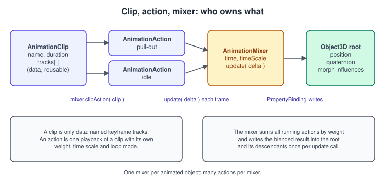
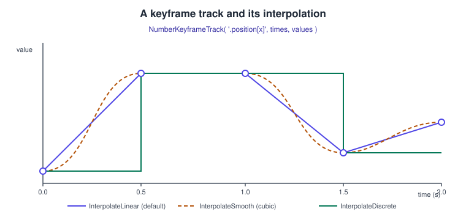
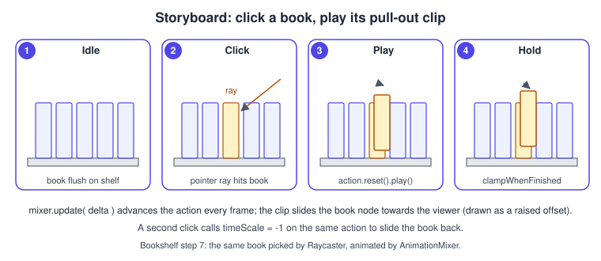
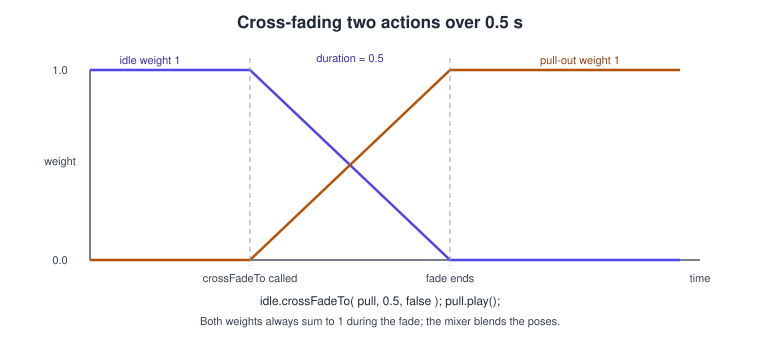
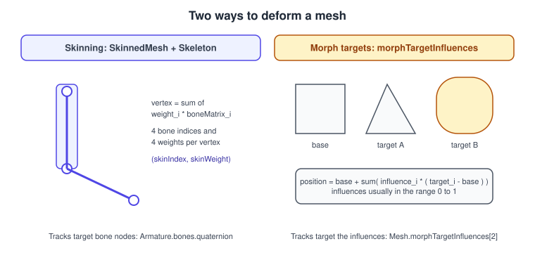

three.js Animation System
|
This content was generated with the assistance of AI and should be verified against the official documentation before being relied on in production. |
Everything that moves in a three.js scene without being driven by hand-written per-frame code goes through one small subsystem: keyframe tracks grouped into clips, played by actions, advanced and blended by a mixer. The same system plays the walking cycle of a skinned character loaded from a glTF file, the facial expression of a mesh with morph targets, and a plain "slide this book out of the shelf" clip that you build in a few lines of JavaScript. This page explains the data model, every option of the playback classes, how blending works, how glTF animations arrive in the scene, and how to advance time correctly in the render loop, and it finishes the Bookshelf interaction started on the interaction and picking page.
The facts were checked in November 2026. The documented version is three.js r187 (three@0.187.0, published on npm on
2026-10-30). The animation classes (AnimationMixer, AnimationAction, AnimationClip, KeyframeTrack and its subclasses,
PropertyBinding) live in the core three module, so nothing here needs an addon import, and they are independent of the
renderer: the same code runs unchanged with WebGLRenderer and with WebGPURenderer
(see WebGPURenderer and TSL). The examples are ES modules for a
Vite project (see bundling) and run in any
browser with WebGL 2. This page is step 7 of the three.js track of the Bookshelf running example: the shelf and its nine books
come from bookshelf.glb (loading is explained in
Loading Models: glTF), a click selects one book (picking page) and
the clip built here pulls it out of the shelf. The general theory of animation in a game loop is in
Game Loop and Frame Timing; the equivalent raw-OpenGL topic is
Skeletal Animation.
The object model

Four classes cooperate, and keeping their roles apart removes most of the confusion:
-
KeyframeTrackis one animated property: a name (which property of which node), an array of times and an array of values. There is one subclass per value type. -
AnimationClipis a named bundle of tracks with a duration. It is plain data, it knows nothing about the scene, and one clip can be played on many objects. -
AnimationMixeris the player for one animated root object. It owns the clock of that object (time,timeScale), creates actions, and on eachupdate( delta )evaluates every running action and writes the blended result into the root and its descendants. -
AnimationActionis one scheduled playback of one clip on one mixer: it carries the playback state (loop mode, time, time scale, weight, whether it is paused) and is what you callplay(),fadeIn()orcrossFadeTo()on.
Two consequences matter in practice. First, a mixer is per animated object: if nine books animate independently, use nine
mixers (or one mixer on a common root, if they always move together). Second, nothing happens until you call
mixer.update( deltaSeconds ) once per frame; creating and playing an action only schedules it.
Keyframe tracks and clips
A track is addressed with a track name of the form nodeName.propertyName, resolved by PropertyBinding against the mixer
root. The node part may be omitted (a leading dot) to mean the root itself, and the property can be an array element or a vector
component.
| Track name | Animates | Track class |
|---|---|---|
|
The root’s position, three numbers per key |
|
|
The root’s rotation, four numbers per key |
|
|
The root’s scale, three numbers per key |
|
|
One component, one number per key |
|
|
The descendant named |
|
|
A property of the material |
|
|
A colour, three numbers per key |
|
|
One morph target of a mesh, by name or index |
|
|
A boolean flag |
|
Prefer .quaternion over .rotation for anything that turns by more than a fraction of a turn: tracks interpolate each number
independently, quaternion tracks use spherical interpolation, and Euler angles interpolated component-wise give the odd paths that
the page Rotations and Quaternions explains.

The constructor is new KeyframeTrack( name, times, values, interpolation ), and the typed subclasses take the same four
arguments. times is in seconds and must be increasing; values is a flat array with valueSize numbers per key (so a
VectorKeyframeTrack with three keys has nine numbers). The interpolation argument is one of four constants:
-
InterpolateLinear(the default): straight lines between keys. -
InterpolateSmooth: cubic interpolation that passes through every key with continuous slope. -
InterpolateDiscrete: the value jumps at each key and holds, the right choice for booleans and strings and for "stepped" poses. -
InterpolateBezier: Bezier interpolation; it needsinTangentsandoutTangentsin the tracksettingsbefore the interpolant is created, and is mainly produced by importers.
Useful helpers on a track are scale( factor ) (convert frames to seconds), shift( offset ), trim( start, end ),
optimize() (drops redundant equal keys) and validate(). AnimationClip has new AnimationClip( name, duration, tracks,
blendMode ): a negative duration (the default, -1) means "compute it from the keys", and resetDuration(), trim(),
optimize(), validate(), clone(), toJSON() and the static AnimationClip.parse( json ) and
AnimationClip.findByName( clips, name ) complete the data side.
Example: a pull-out clip for a book
The Bookshelf book slides forward along +z by 0.12 units in 0.4 s, stays out, and can slide back by playing the same action
with a negative time scale. The clip is built in code because bookshelf.glb carries no animations of its own.
import * as THREE from 'three';
/**
* Builds a clip that moves a node from restPosition to restPosition + (0, 0, distance).
* Track names use '.position' so the clip applies to whatever root the mixer was created with.
*/
export function createPullOutClip(restPosition, distance = 0.12, seconds = 0.4) {
const start = restPosition;
const end = restPosition.clone().add(new THREE.Vector3(0, 0, distance));
const position = new THREE.VectorKeyframeTrack(
'.position',
[0, seconds],
[start.x, start.y, start.z, end.x, end.y, end.z],
THREE.InterpolateSmooth
);
// A small tilt towards the reader sells the motion: rotate 12 degrees around X.
const tilt = new THREE.Quaternion().setFromAxisAngle(new THREE.Vector3(1, 0, 0), THREE.MathUtils.degToRad(-12));
const rest = new THREE.Quaternion();
const rotation = new THREE.QuaternionKeyframeTrack(
'.quaternion',
[0, seconds],
[rest.x, rest.y, rest.z, rest.w, tilt.x, tilt.y, tilt.z, tilt.w]
);
return new THREE.AnimationClip('pull-out', seconds, [position, rotation]);
}Mixer and actions
The mixer
const mixer = new THREE.AnimationMixer( root ); // one per animated root
const action = mixer.clipAction( clip ); // same clip and root always return the same action
action.play();
// every frame:
mixer.update( deltaSeconds );Source: three.js docs: AnimationClip
mixer.clipAction( clip, optionalRoot, blendMode ) accepts a clip object or a clip name (looked up in the root’s own
animations array), and existingAction( clip ) returns an action only if it was already created (otherwise null). Mixer
properties are time (seconds since creation) and timeScale; setting timeScale = 0 pauses every action on that mixer and
setting it back to 1 resumes them. setTime( t ), stopAllAction() and getRoot() complete the playback API. Memory is released
with uncacheAction( clip ), uncacheClip( clip ) and uncacheRoot( root ); call action.stop() first. The mixer also
dispatches loop and finished events when an action completes a loop or ends, which is the hook for "when the book is out, enable the
read button".
Action options
| Property or method | Default | Effect |
|---|---|---|
|
|
|
|
|
If |
|
|
When |
|
|
Freezes the action at its current time while keeping its influence. |
|
|
Local time in seconds, clamped or wrapped to the clip duration. Write it to scrub. |
|
|
Playback speed; |
|
|
Influence in 0 to 1 when several actions run on the same properties (see blending). |
|
|
Smooths the first interpolation interval so a cross-fade does not start with a velocity jump. |
|
|
|
|
|
|
|
Delays the start to a mixer time. |
|
|
Ramp the time scale (ease to a stop, speed up, slow down). |
|
|
Rescales the clip so one loop lasts this long. |
|
|
Locks this action’s time and time scale to another action. |
|
|
Queries. |
A frequent pitfall is playing a LoopOnce action a second time: after it finishes, play() alone does nothing, because the
action is at the end of its clip. Call action.reset().play() to replay it.
Example: toggling a book in and out
import * as THREE from 'three';
import { createPullOutClip } from './pull-out-clip.js';
/** Owns one mixer and one action per book and toggles it between "in" and "out". */
export class BookPuller {
constructor(book) {
this.book = book;
this.out = false;
const clip = createPullOutClip(book.position.clone());
this.mixer = new THREE.AnimationMixer(book);
this.action = this.mixer.clipAction(clip);
this.action.setLoop(THREE.LoopOnce, 1);
this.action.clampWhenFinished = true; // stay out after the clip ends
}
toggle() {
this.out = !this.out;
this.action.paused = false;
this.action.timeScale = this.out ? 1 : -1;
if (this.out) {
this.action.reset().play(); // forwards from 0
} else {
this.action.time = this.action.getClip().duration; // backwards from the end
this.action.play();
}
}
update(deltaSeconds) {
this.mixer.update(deltaSeconds);
}
}
The procedure the storyboard shows is: (1) books idle; (2) a click is converted to a ray and a book is picked; (3) toggle()
resets the action and mixer.update advances it each frame; (4) because of clampWhenFinished, the book stays at the last key
until the next click plays the action backwards.
Cross-fading and blending
When several actions animate the same property, the mixer blends them by weight. Weights are not normalised for you: three.js mixes each property by the weights of the actions that have it, so for a clean transition you fade one down while the other goes up.

// Fade from one action to another over half a second.
idle.reset().play();
pullOut.reset().play();
idle.crossFadeTo(pullOut, 0.5, false); // idle weight 1 -> 0, pullOut weight 0 -> 1
// Equivalent, written from the incoming side:
// pullOut.crossFadeFrom(idle, 0.5, false);
// Fade a single action in or out:
action.fadeIn(0.3);
action.fadeOut(0.3);
action.stopFading();The third argument, warp (default false), also ramps the time scale of the two actions so that, for cyclic clips such as
walk to run, their phases stay aligned during the blend; use it only when the two clips have different durations. When you need
the speeds to match across a long period, use syncWith( otherAction ) instead.
Additive blending layers a clip on top of the others instead of replacing them: pass AdditiveAnimationBlendMode as the
blendMode of the clip or the action. For an additive clip to make sense it must be expressed as differences from a reference
pose; THREE.AnimationUtils.makeClipAdditive( clip ) converts a normal clip. A typical use is a breathing or lean-in motion played on top of a locomotion cycle. For the Bookshelf, a subtle
additive wobble on the book that is held out is a good test.
Skinning and morph targets

Skinning deforms one mesh with a skeleton. A SkinnedMesh has, per vertex, up to four bone indices (skinIndex) and four
weights (skinWeight); a Skeleton holds the Bone nodes and their inverse bind matrices. Each frame the bone world matrices
are uploaded to the GPU, and the vertex shader blends them. The animation clip does not touch vertices: its tracks drive the
.position, .quaternion and .scale of the bone nodes, which is why the track names for a skinned character are bone names such
as Hips.quaternion. Skeleton helpers (SkeletonHelper) visualise the bones while you debug.
Morph targets store alternative vertex positions (and optionally normals) for a geometry; a mesh blends them with
mesh.morphTargetInfluences, an array of numbers (usually 0 to 1), and mesh.morphTargetDictionary maps target names to indices.
A track named .morphTargetInfluences[smile] or .morphTargetInfluences[2] animates one influence. Morph targets suit
faces, cloth wrinkles, a book cover that opens slightly: shapes that are easier to author as a few poses than as a rig.
| Aspect | Skinning | Morph targets |
|---|---|---|
Data per vertex |
4 bone indices and 4 weights |
One extra position per target (and normal) |
Cost |
Bone matrices per frame, almost independent of target count |
Grows with the number of targets blended |
Best for |
Characters, tails, anything articulated |
Facial expressions, corrective shapes |
Animated property |
Bone node transforms |
|
Can be combined |
Yes: a glTF mesh can be skinned and morphed in one clip |
Yes |
In the old API the material needed skinning: true or morphTargets: true; those flags were removed (r129 to r130), and the
renderer now detects SkinnedMesh and morph targets by itself.
Example: playing the animations of a glTF file
import * as THREE from 'three';
import { GLTFLoader } from 'three/addons/loaders/GLTFLoader.js';
const loader = new GLTFLoader();
const gltf = await loader.loadAsync('/models/character.glb');
scene.add(gltf.scene);
// Every glTF animation becomes an AnimationClip in gltf.animations.
console.log(gltf.animations.map((clip) => `${clip.name} ${clip.duration.toFixed(2)}s`));
const mixer = new THREE.AnimationMixer(gltf.scene);
const walk = mixer.clipAction(THREE.AnimationClip.findByName(gltf.animations, 'Walk'));
const run = mixer.clipAction(THREE.AnimationClip.findByName(gltf.animations, 'Run'));
walk.play();
// Switch gait with a half-second blend.
function startRunning() {
run.reset().play();
walk.crossFadeTo(run, 0.5, true); // warp = true keeps the two step cycles in phase
}
// Morph targets: drive them by hand when no clip is needed.
gltf.scene.traverse((node) => {
if (node.isMesh && node.morphTargetDictionary) {
const index = node.morphTargetDictionary['smile'];
if (index !== undefined) node.morphTargetInfluences[index] = 0.7;
}
});
renderer.setAnimationLoop((timestamp) => {
timer.update(timestamp);
mixer.update(timer.getDelta());
renderer.render(scene, camera);
});The glTF exporter of the DCC tool (Blender and others) names the clips; check gltf.animations before hard-coding names. Skinned meshes are expensive to clone, so use SkeletonUtils.clone from
three/addons/utils/SkeletonUtils.js when you instantiate the same character many times.
Advancing time: Timer instead of Clock
The mixer needs a delta in seconds. Historically that came from THREE.Clock.getDelta(). Clock is deprecated since r183 and
Timer (a core class, import { Timer } from 'three') is the replacement. The design difference is that Timer.update() is called
once per step and then getDelta() and getElapsed() return the same values however often you call them, while Clock
recomputed on every call (so two systems asking for the delta in one frame got different numbers). With the Page Visibility API
connected, Timer also avoids the huge delta that a background tab otherwise produces when you return to it.
import { Timer } from 'three';
const timer = new Timer();
timer.connect(document); // optional: ignore time spent in a hidden tab
renderer.setAnimationLoop((timestamp) => {
timer.update(timestamp); // once per frame; timestamp is in milliseconds
const delta = timer.getDelta(); // seconds, stable within this frame
const elapsed = timer.getElapsed();
for (const puller of pullers) puller.update(delta);
updateFallingBooks(delta, elapsed);
renderer.render(scene, camera);
});Source: three.js docs: Timer
timer.setTimescale( 0.5 ) slows everything that reads the timer, which is handy for slow-motion debugging, and timer.reset()
discards the delta of the current step (for example after loading a large file inside the loop). timer.dispose() releases the
listener installed by connect().
Procedural motion: the falling books
Not everything is a clip. In the "catch the falling books" game of the three.js track, a book’s fall is a simple integration, and building a one-key clip for every spawn would be wasteful:
const GRAVITY = -9.8;
const falling = []; // { mesh, velocity }
export function spawnBook(template, x) {
const mesh = template.clone();
mesh.position.set(x, 3, 0);
mesh.rotation.set(Math.random() * Math.PI, 0, Math.random() * Math.PI);
scene.add(mesh);
falling.push({ mesh, velocity: 0, spin: (Math.random() - 0.5) * 4 });
}
export function updateFallingBooks(delta, elapsed) {
for (let i = falling.length - 1; i >= 0; i--) {
const b = falling[i];
b.velocity += GRAVITY * delta;
b.mesh.position.y += b.velocity * delta;
b.mesh.rotation.y += b.spin * delta;
if (b.mesh.position.y < -1) { // missed: remove it
scene.remove(b.mesh);
falling.splice(i, 1);
}
}
}Source: three.js docs: Object3D
Use clips for authored motion that designers may edit, loops and blends; use delta-time code for physics-like or random motion. For real collision and rigid bodies, the three.js manual lists physics engines that integrate with the scene graph; the animation system itself does not simulate physics. The game loop structure is covered in Game Loop and Frame Timing and the browser scheduling side in Browser Animations.
Performance and cleanup
-
Update only what moves. A mixer that has no scheduled action does almost no work, but a thousand mixers with running actions evaluate a thousand property sets per frame. Stop actions (
action.stop()) when a clip is no longer needed. -
One mixer per root, many actions per mixer. Do not create a mixer per action.
-
Share clips, not mixers. Nine books use one clip object built once; each book has its own mixer and action.
-
Free the cache. A mixer caches bindings; when an object is removed call
mixer.stopAllAction()thenmixer.uncacheRoot( root ), anduncacheClip( clip )for clips you will never play again. Geometry, materials and textures are disposed separately (see Performance and Disposal). -
Skinned meshes cost per bone. Keep the bone count and the number of influences low for crowds, and avoid animating off-screen characters:
mixer.timeScale = 0for what the camera cannot see. -
Optimise clips.
clip.optimize()removes equal consecutive keys, which matters for morph sequences baked at 30 keys per second. -
Worker and main thread. The mixer is plain JavaScript; if you render in a worker (see OffscreenCanvas and Workers) animate there too, because the scene objects live there.
Recent changes
| Version | Change |
|---|---|
r86 |
|
r129 to r130 |
|
r183 |
|
r187 |
Current documented version ( |
Where the books are outdated
Animation is covered by PAR chapter 4, LTJ chapter 9 and TCB chapter 7. They were written against three.js releases from 2012 to 2015, so their code does not run on r187.
| Book approach | Today | Since |
|---|---|---|
Tween.js to move objects, or hand-written |
Keyframe tracks and |
r86 |
|
|
r86 |
|
Not needed; flags removed |
r129 to r130 |
|
|
r183 |
|
glTF 2.0 with |
r97 to r111 |
Physijs for rigid bodies (LTJ 12, TCB 7) |
An external physics engine from the manual’s physics page; the animation system is not a physics engine |
Physijs unmaintained |
Sound (PAR chapter 8) is outside this page; positional audio in three.js is AudioListener and PositionalAudio, documented in
the three.js manual. See also the general changes since older guides.
References
-
three.js manual and docs: three.js manual, AnimationMixer, AnimationAction, AnimationClip, KeyframeTrack, Timer
-
three.js migration guide: Migration Guide; releases: GitHub releases
-
glTF 2.0 animation: glTF 2.0 specification, animations
-
Books: WebGL: Up and Running (O’Reilly), Learning Three.js, 2nd ed. (Packt), Three.js Cookbook (Packt)